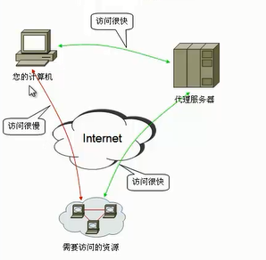
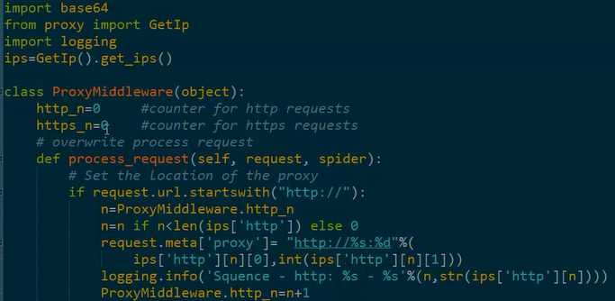
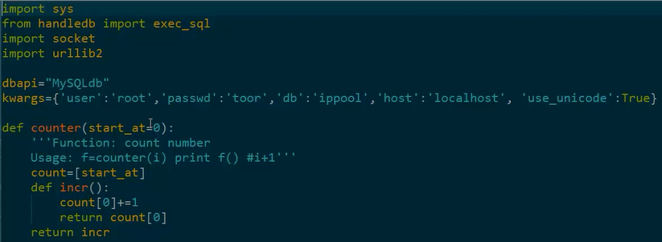
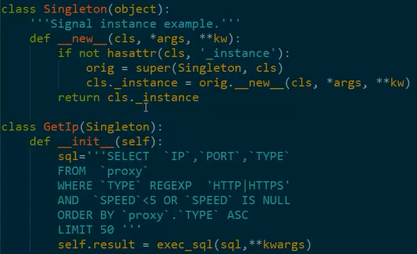
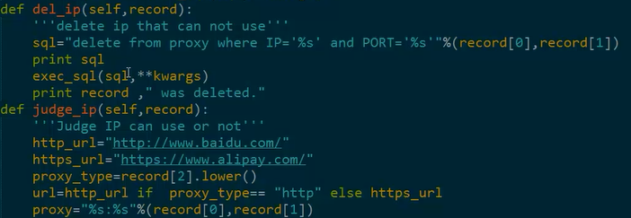
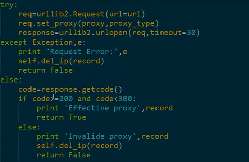
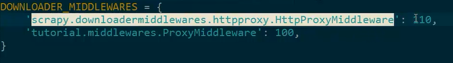

原理可以简单的概述为:
用户(A)-在线代理服务器(B)-目标网站(C)，
即：A向B发送浏览请求-B执行请求发送给C-C收到请求，回应。

1, Spider Middlewares
Each middleware component is a Python class that defines one or more of the following methods:
class scrapy.spidermiddlewares.SpiderMiddleware
process_spider_input(response, spider)
This method is called for each response that goes through the spider middleware and into the spider, for processing.
process_spider_input() should return None or raise an exception.
If it returns None, Scrapy will continue processing this response, executing all other middlewares until, finally, the response is handed to the spider for processing.
If it raises an exception, Scrapy won’t bother calling any other spider middleware process_spider_input() and will call the request errback. The output of the errback is chained back in the other direction for process_spider_output() to process it, or process_spider_exception() if it raised an exception.
Parameters
• response (Response object) – the response being processed
• spider (Spider object) – the spider for which this response is intended
process_spider_output(response, result, spider)
This method is called with the results returned from the Spider, after it has processed the response.
process_spider_output() must return an iterable of Request, dict or Item objects.
Parameters
• response (Response object) – the response which generated this output from the spi-der
• result (an iterable of Request, dict or Item objects) – the result returned by the spider
• spider (Spider object) – the spider whose result is being processed
process_spider_exception(response, exception, spider)
This method is called when when a spider or process_spider_input() method (from other spider middleware) raises an exception.
process_spider_exception() should return either None or an iterable of Response, dict or Item objects.
If it returns None, Scrapy will continue processing this exception, executing any other process_spider_exception() in the following middleware components, until no middleware components are left and the exception reaches the engine (where it’s logged and discarded).
If it returns an iterable the process_spider_output() pipeline kicks in, and no other process_spider_exception() will be called.
Parameters
• response (Response object) – the response being processed when the exception was raised
• exception (Exception object) – the exception raised
• spider (Spider object) – the spider which raised the exception
process_start_requests(start_requests, spider)
New in version 0.15.
This method is called with the start requests of the spider, and works similarly to the process_spider_output() method, except that it doesn’t have a response associated and must return only requests (not items).
It receives an iterable (in the start_requests parameter) and must return another iterable of Request objects.
Note: When implementing this method in your spider middleware, you should always return an iterable (that follows the input one) and not consume all start_requests iterator because it can be very large
(or even unbounded) and cause a memory overflow. The Scrapy engine is designed to pull start requests while it has capacity to process them, so the start requests iterator can be effectively endless where there is some other condition for stopping the spider (like a time limit or item/page count).
Parameters
• start_requests (an iterable of Request) – the start requests
•spider (Spider object) – the spider to whom the start requests belong
2, Downloader Middlewares
Each middleware component is a Python class that defines one or more of the following methods:
class scrapy.downloadermiddlewares.DownloaderMiddleware
process_request(request, spider)
This method is called for each request that goes through the download middleware.
process_request() should either: return None, return a Response object, return a Request object, or raise IgnoreRequest.
If it returns None, Scrapy will continue processing this request, executing all other middlewares until, finally, the appropriate downloader handler is called the request performed (and its response downloaded).
If it returns a Response object, Scrapy won’t bother calling any other process_request() or process_exception() methods, or the appropriate download function; it’ll return that response. The process_response() methods of installed middleware is always called on every response.
If it returns a Request object, Scrapy will stop calling process_request methods and reschedule the returned request. Once the newly returned request is performed, the appropriate middleware chain will be called on the downloaded response.
If it raises an IgnoreRequest exception, the process_exception() methods of installed down-loader middleware will be called. If none of them handle the exception, the errback function of the request (Request.errback) is called. If no code handles the raised exception, it is ignored and not logged (unlike other exceptions).
Parameters
• request (Request object) – the request being processed
• spider (Spider object) – the spider for which this request is intended
process_response(request, response, spider)
process_response() should either: return a Response object, return a Request object or raise a
IgnoreRequest exception.
If it returns a Response (it could be the same given response, or a brand-new one), that response will continue to be processed with the process_response() of the next middleware in the chain.
If it returns a Request object, the middleware chain is halted and the returned request is resched-uled to be downloaded in the future. This is the same behavior as if a request is returned from process_request().
If it raises an IgnoreRequest exception, the errback function of the request (Request.errback) is called. If no code handles the raised exception, it is ignored and not logged (unlike other exceptions).
Parameters
• request (is a Request object) – the request that originated the response
• response (Response object) – the response being processed
• spider (Spider object) – the spider for which this response is intended
process_exception(request, exception, spider)
Scrapy calls process_exception() when a download handler or a process_request() (from a downloader middleware) raises an exception (including an IgnoreRequest exception)
process_exception() should return: either None, a Response object, or a Request object.
If it returns None, Scrapy will continue processing this exception, executing any other process_exception() methods of installed middleware, until no middleware is left and the default exception handling kicks in.
If it returns a Response object, the process_response() method chain of installed middleware is started, and Scrapy won’t bother calling any other process_exception() methods of middleware.
If it returns a Request object, the returned request is rescheduled to be downloaded in the future. This stops the execution of process_exception() methods of the middleware the same as returning a response would.
Parameters
request (is a Request object) – the request that generated the exception
exception (an Exception object) – the raised exception
spider (Spider object) – the spider for which this request is intended
1，代理IP的获取——西刺
这里使用我们之前讲过的tutorial，打开tutorial，打开middlewars，更改部分内容，更改部分的代码如图所示：

2，代理IP的验证——socket




在settings中启用：

3，代理IP的使用——downloader middlewares
要求掌握：添加代理ip的方法
【本文由麦子学院独家原创，转载请注明出处并保留原文链接】